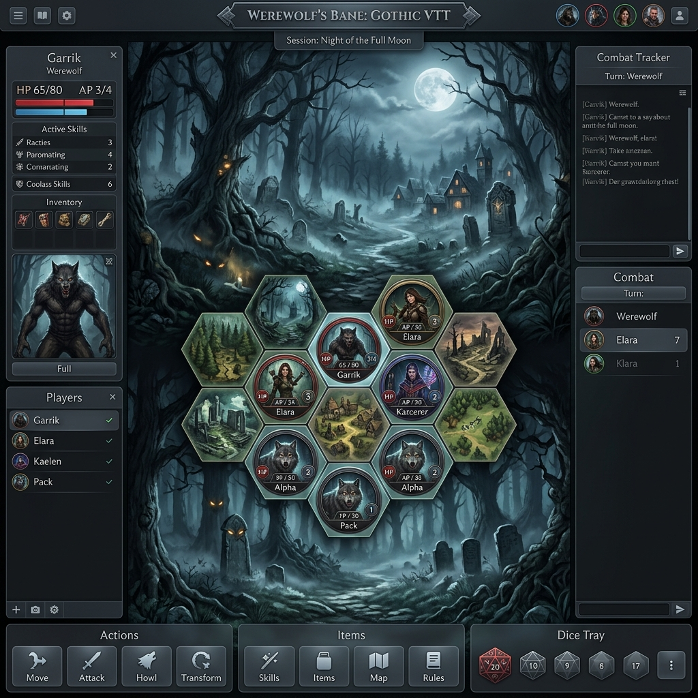
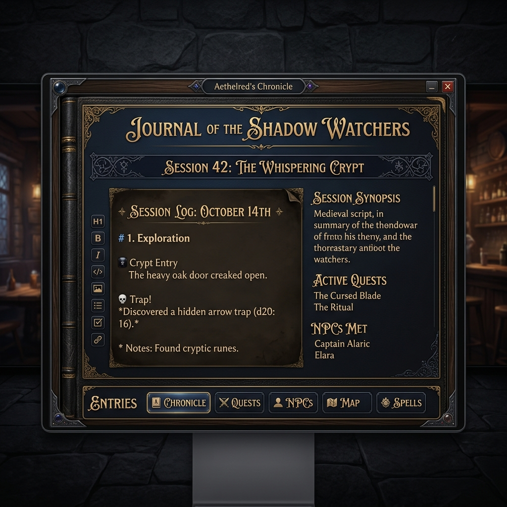
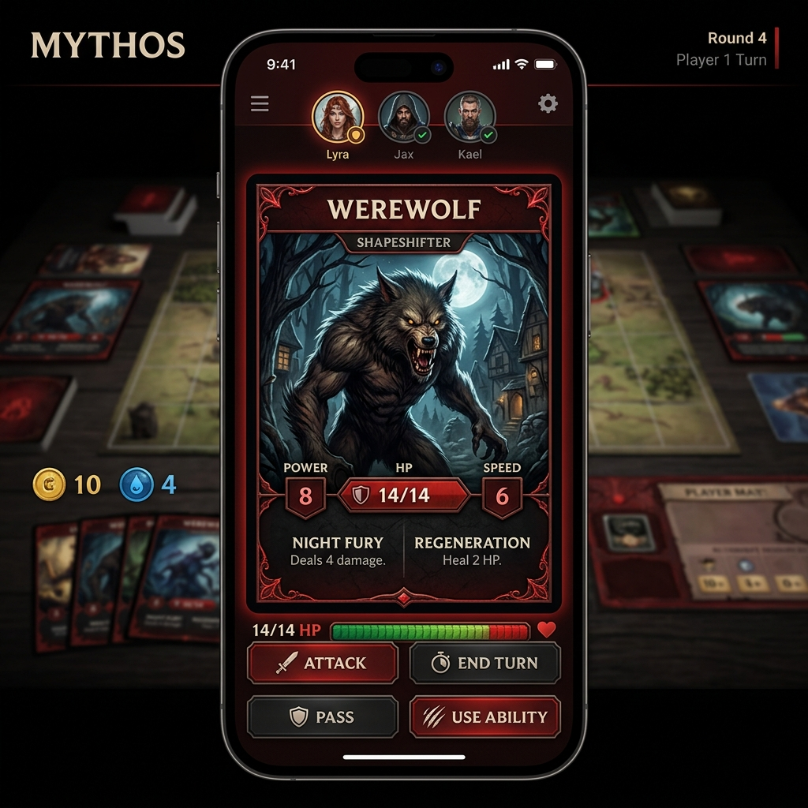

<!DOCTYPE html>
<html lang="fr">
<head>
  <meta charset="UTF-8">
  <meta name="viewport" content="width=device-width, initial-scale=1.0">
  <title>VTT Loup-Garou - Documentation Officielle</title>
  <link rel="stylesheet" href="style.css">
  <script src="script.js" defer></script>
</head>
<body>
  <div class="app-container">
    <!-- Sidebar Navigation -->
    <aside class="sidebar">
      <div class="brand">
        <div class="brand-icon">
          <!-- Custom Wolf SVG -->
          <svg viewBox="0 0 24 24">
            <path d="M12 2C6.48 2 2 6.48 2 12s4.48 10 10 10 10-4.48 10-10S17.52 2 12 2zm1 15.5c0 .83-.67 1.5-1.5 1.5s-1.5-.67-1.5-1.5.67-1.5 1.5-1.5 1.5.67 1.5 1.5zm-1.5-3.5c-.55 0-1-.45-1-1V8c0-.55.45-1 1-1s1 .45 1 1v5c0 .55-.45 1-1 1z"/>
          </svg>
        </div>
        <h1 class="brand-title">VTT Loup-Garou</h1>
        <span class="brand-subtitle">Guide de Survie</span>
      </div>

      <nav>
        <ul class="nav-menu">
          <li class="nav-item active">
            <button data-tab="overview">
              <svg viewBox="0 0 24 24" fill="none" stroke="currentColor" stroke-width="2" stroke-linecap="round" stroke-linejoin="round"><path d="m3 9 9-7 9 7v11a2 2 0 0 1-2 2H5a2 2 0 0 1-2-2z"/><polyline points="9 22 9 12 15 12 15 22"/></svg>
              Présentation
            </button>
          </li>
          <li class="nav-item">
            <button data-tab="features">
              <svg viewBox="0 0 24 24" fill="none" stroke="currentColor" stroke-width="2" stroke-linecap="round" stroke-linejoin="round"><rect x="3" y="3" width="7" height="7"/><rect x="14" y="3" width="7" height="7"/><rect x="14" y="14" width="7" height="7"/><rect x="3" y="14" width="7" height="7"/></svg>
              Fonctionnalités
            </button>
          </li>
          <li class="nav-item">
            <button data-tab="setup">
              <svg viewBox="0 0 24 24" fill="none" stroke="currentColor" stroke-width="2" stroke-linecap="round" stroke-linejoin="round"><path d="M21 16V8a2 2 0 0 0-1-1.73l-7-4a2 2 0 0 0-2 0l-7 4A2 2 0 0 0 3 8v8a2 2 0 0 0 1 1.73l7 4a2 2 0 0 0 2 0l7-4A2 2 0 0 0 21 16z"/><polyline points="3.27 6.96 12 12.01 20.73 6.96"/><line x1="12" y1="22.08" x2="12" y2="12"/></svg>
              Installation locale
            </button>
          </li>
          <li class="nav-item">
            <button data-tab="supabase">
              <svg viewBox="0 0 24 24" fill="none" stroke="currentColor" stroke-width="2" stroke-linecap="round" stroke-linejoin="round"><ellipse cx="12" cy="5" rx="9" ry="3"/><path d="M3 5v14c0 1.66 4 3 9 3s9-1.34 9-3V5"/><path d="M3 12c0 1.66 4 3 9 3s9-1.34 9-3"/></svg>
              Base Supabase
            </button>
          </li>
          <li class="nav-item">
            <button data-tab="github">
              <svg viewBox="0 0 24 24" fill="none" stroke="currentColor" stroke-width="2" stroke-linecap="round" stroke-linejoin="round"><path d="M9 19c-5 1.5-5-2.5-7-3m14 6v-3.87a3.37 3.37 0 0 0-.94-2.61c3.14-.35 6.44-1.54 6.44-7A5.44 5.44 0 0 0 20 4.77 5.07 5.07 0 0 0 19.91 1S18.73.65 16 2.48a13.38 13.38 0 0 0-7 0C6.27.65 5.09 1 5.09 1A5.07 5.07 0 0 0 5 4.77a5.44 5.44 0 0 0-1.5 3.78c0 5.42 3.3 6.61 6.44 7A3.37 3.37 0 0 0 9 18.13V22"/></svg>
              Dépôt Github
            </button>
          </li>
          <li class="nav-item">
            <button data-tab="faq">
              <svg viewBox="0 0 24 24" fill="none" stroke="currentColor" stroke-width="2" stroke-linecap="round" stroke-linejoin="round"><circle cx="12" cy="12" r="10"/><path d="M9.09 9a3 3 0 0 1 5.83 1c0 2-3 3-3 3"/><line x1="12" y1="17" x2="12.01" y2="17"/></svg>
              Questions / Réponses
            </button>
          </li>
          <li class="nav-item">
            <button data-tab="suggestions">
              <svg viewBox="0 0 24 24" fill="none" stroke="currentColor" stroke-width="2" stroke-linecap="round" stroke-linejoin="round"><path d="M21 11.5a8.38 8.38 0 0 1-.9 3.8 8.5 8.5 0 0 1-7.6 4.7 8.38 8.38 0 0 1-3.8-.9L3 21l1.9-5.7a8.38 8.38 0 0 1-.9-3.8 8.5 8.5 0 0 1 4.7-7.6 8.38 8.38 0 0 1 3.8-.9h.5a8.48 8.48 0 0 1 8 8v.5z"/></svg>
              Suggestions
            </button>
          </li>
        </ul>
      </nav>

      <footer class="sidebar-footer">
        <p>&copy; 2026 VTT Loup-Garou</p>
        <p>Créé pour des nuits mystérieuses</p>
      </footer>
    </</aside>

    <!-- Main Content Panel -->
    <main class="main-content">
      
      <!-- SECTION 1: PRESENTATION -->
      <section id="overview" class="tab-section active">
        <h1 class="section-title">Présentation du VTT</h1>
        <p class="section-subtitle">Une table virtuelle moderne et immersive optimisée pour le jeu de rôle Loup-Garou.</p>
        
        <div class="card" style="margin-bottom: 2.5rem;">
          <h2 class="card-title">
            <svg width="20" height="20" viewBox="0 0 24 24" fill="none" stroke="currentColor" stroke-width="2"><circle cx="12" cy="12" r="10"/><path d="m9.09 9 3 3-3 3"/></svg>
            Qu'est-ce que le VTT Loup-Garou ?
          </h2>
          <div class="card-body">
            Ce programme est une application web en temps réel permettant à un Maître du Jeu (MJ) de diriger des parties de Loup-Garou ou de jeux à rôles cachés. Les joueurs se connectent via leur smartphone pour recevoir leur carte de rôle secrète, voter, écrire dans le journal, et interagir avec le plateau de jeu géré par le MJ.
          </div>
        </div>

        <div class="screenshot-wrapper">
          
          <div class="screenshot-caption">
            <strong>Interface du Maître du Jeu</strong>
            Permet de déplacer les joueurs sur le plateau, de gérer la distribution des rôles et de contrôler l'ambiance sonore.
          </div>
        </div>
      </section>

      <!-- SECTION 2: FEATURES -->
      <section id="features" class="tab-section">
        <h1 class="section-title">Fonctionnalités Clés</h1>
        <p class="section-subtitle">Découvrez les outils interactifs mis à disposition du MJ et des joueurs.</p>

        <div class="grid-3">
          <div class="card">
            <h2 class="card-title">🔮 Plateau interactif</h2>
            <p class="card-body">Un canvas 2D sur lequel le MJ peut positionner et déplacer les jetons des joueurs avec un système d'aimants magnétiques.</p>
          </div>
          <div class="card">
            <h2 class="card-title">📖 Journal de Campagne</h2>
            <p class="card-body">Un journal partagé permettant d'écrire en Markdown avec gestion des verrous pour éviter les collisions d'édition.</p>
          </div>
          <div class="card">
            <h2 class="card-title">💬 Messagerie Privée</h2>
            <p class="card-body">Les joueurs peuvent chuchoter ou envoyer des messages privés directement au MJ depuis leur smartphone.</p>
          </div>
          <div class="card">
            <h2 class="card-title">🎭 Distribution de Rôles</h2>
            <p class="card-body">Moteur automatisé pour associer, révéler et distribuer des rôles personnalisés avec illustration.</p>
          </div>
          <div class="card">
            <h2 class="card-title">🔊 Soundboard Hôte</h2>
            <p class="card-body">Commandes audio à distance pour diffuser des ambiances ou effets sonores afin d'immerger la table.</p>
          </div>
          <div class="card">
            <h2 class="card-title">🗳️ Votes en temps réel</h2>
            <p class="card-body">Interface de vote de groupe pour prendre des décisions rapides et éliminer les suspects au lever du jour.</p>
          </div>
        </div>

        <div class="screenshot-wrapper">
          
          <div class="screenshot-caption">
            <strong>Le Journal de Campagne Collaboratif</strong>
            Interface d'édition riche avec gestion de verrous pour rédiger l'histoire de vos parties.
          </div>
        </div>
      </section>

      <!-- SECTION 3: SETUP -->
      <section id="setup" class="tab-section">
        <h1 class="section-title">Installation Locale</h1>
        <p class="section-subtitle">Comment configurer et lancer le projet sur votre propre machine.</p>

        <div class="card">
          <h2 class="card-title">Prérequis</h2>
          <p class="card-body">Assurez-vous d'avoir installé **Node.js** (v18+) et **npm**.</p>
          
          <ul class="steps-list">
            <li class="step-item">
              <div class="step-number">1</div>
              <div class="step-content">
                <h3>Cloner le dépôt et entrer dans le dossier</h3>
                <div class="code-block">
                  <span id="code-clone">git clone https://github.com/doo89/VTT.git && cd VTT</span>
                  <button class="copy-btn" data-target="code-clone">Copier</button>
                </div>
              </div>
            </li>
            <li class="step-item">
              <div class="step-number">2</div>
              <div class="step-content">
                <h3>Installer les dépendances</h3>
                <div class="code-block">
                  <span id="code-install">npm install</span>
                  <button class="copy-btn" data-target="code-install">Copier</button>
                </div>
              </div>
            </li>
            <li class="step-item">
              <div class="step-number">3</div>
              <div class="step-content">
                <h3>Créer les variables d'environnement</h3>
                <p>Copiez le fichier `.env.example` et renommez-le en `.env` à la racine du projet.</p>
                <div class="code-block">
                  <span id="code-env">copy .env.example .env</span>
                  <button class="copy-btn" data-target="code-env">Copier</button>
                </div>
                <p style="margin-top: 0.5rem; font-size: 0.85rem; color: var(--text-muted);">Configurez vos clés Supabase obtenues à l'étape suivante dans ce fichier.</p>
              </div>
            </li>
            <li class="step-item">
              <div class="step-number">4</div>
              <div class="step-content">
                <h3>Lancer le serveur de développement</h3>
                <div class="code-block">
                  <span id="code-dev">npm run dev</span>
                  <button class="copy-btn" data-target="code-dev">Copier</button>
                </div>
                <p style="margin-top: 0.5rem;">L'application est maintenant accessible localement à l'adresse **http://localhost:5173**.</p>
              </div>
            </li>
          </ul>
        </div>
      </section>

      <!-- SECTION 4: SUPABASE -->
      <section id="supabase" class="tab-section">
        <h1 class="section-title">Configuration Supabase</h1>
        <p class="section-subtitle">Étapes indispensables pour configurer la base de données et le Realtime.</p>

        <div class="card">
          <ul class="steps-list">
            <li class="step-item">
              <div class="step-number">1</div>
              <div class="step-content">
                <h3>Créer un Projet</h3>
                <p>Connectez-vous sur <a href="https://supabase.com" target="_blank" style="color: var(--color-accent-red-hover); text-decoration: underline;">Supabase</a> et créez un nouveau projet.</p>
              </div>
            </li>
            <li class="step-item">
              <div class="step-number">2</div>
              <div class="step-content">
                <h3>Activer le Realtime Broadcast & Presence</h3>
                <p>Le projet utilise la messagerie en temps réel (Broadcast et Presence) de Supabase pour synchroniser le MJ et les smartphones.</p>
                <p style="margin-top: 0.5rem; color: var(--text-secondary);">
                  Allez dans **Database** > **Replication** > Activez la réplication sur vos tables, ou utilisez l'onglet Realtime pour vous assurer que les connexions websocket sont autorisées.
                </p>
              </div>
            </li>
            <li class="step-item">
              <div class="step-number">3</div>
              <div class="step-content">
                <h3>Créer le Bucket Storage</h3>
                <p>Pour héberger les photos de profil, les cartes de jeu ou les musiques :</p>
                <p style="margin-top: 0.5rem; color: var(--text-secondary);">
                  1. Rendez-vous dans l'onglet **Storage** de votre console Supabase.<br>
                  2. Créez un nouveau bucket nommé **exactement** <code>images-all</code>.<br>
                  3. Définissez la politique d'accès du bucket sur **Public** (autoriser la lecture publique anonyme pour l'affichage des images).
                </p>
              </div>
            </li>
            <li class="step-item">
              <div class="step-number">4</div>
              <div class="step-content">
                <h3>Remplir vos clés</h3>
                <p>Récupérez votre **Project URL** et votre **Anon Key** depuis l'onglet **Settings > API** et collez-les dans votre fichier `.env` ou sur l'application.</p>
              </div>
            </li>
          </ul>
        </div>
      </section>

      <!-- SECTION 5: GITHUB -->
      <section id="github" class="tab-section">
        <h1 class="section-title">Dépôt GitHub</h1>
        <p class="section-subtitle">Suivez le développement et collaborez sur le projet.</p>

        <div class="card" style="text-align: center; padding: 3rem 2rem;">
          <div class="brand-icon" style="margin: 0 auto 1.5rem auto; float: none;">
            <svg viewBox="0 0 24 24" fill="currentColor">
              <path d="M12 2C6.477 2 2 6.484 2 12.017c0 4.425 2.865 8.18 6.839 9.504.5.092.682-.217.682-.483 0-.237-.008-.868-.013-1.703-2.782.605-3.369-1.343-3.369-1.343-.454-1.158-1.11-1.466-1.11-1.466-.908-.62.069-.608.069-.608 1.003.07 1.53 1.032 1.53 1.032.892 1.53 2.341 1.088 2.91.832.092-.647.35-1.088.636-1.338-2.22-.253-4.555-1.113-4.555-4.951 0-1.093.39-1.988 1.029-2.688-.103-.253-.446-1.272.098-2.65 0 0 .84-.27 2.75 1.026A9.564 9.564 0 0112 6.844c.85.004 1.705.115 2.504.337 1.909-1.296 2.747-1.027 2.747-1.027.546 1.379.202 2.398.1 2.651.64.7 1.028 1.595 1.028 2.688 0 3.848-2.339 4.695-4.566 4.943.359.309.678.92.678 1.855 0 1.338-.012 2.419-.012 2.747 0 .268.18.58.688.482A10.019 10.019 0 0022 12.017C22 6.484 17.522 2 12 2z"/>
            </svg>
          </div>
          <h2 style="font-family: var(--font-title); margin-bottom: 1rem; font-size: 1.75rem;">doo89 / VTT</h2>
          <p style="color: var(--text-secondary); max-width: 600px; margin: 0 auto 2rem auto; font-size: 1rem;">
            Retrouvez le code source, suivez l'avancement des versions, et proposez des pull requests directement sur le dépôt GitHub officiel.
          </p>
          <a href="https://github.com/doo89/VTT" target="_blank" class="submit-btn" style="text-decoration: none; display: inline-block; width: auto; padding: 1rem 3rem;">
            Ouvrir le dépôt GitHub
          </a>
        </div>
      </section>

      <!-- SECTION 6: FAQ -->
      <section id="faq" class="tab-section">
        <h1 class="section-title">Questions Fréquentes</h1>
        <p class="section-subtitle">Les réponses aux questions les plus courantes sur le fonctionnement de la table.</p>

        <div class="faq-list">
          <div class="faq-item">
            <button class="faq-question">
              <span>Pourquoi mes joueurs reçoivent l'erreur "Failed to fetch dynamically imported module" ?</span>
              <svg width="18" height="18" viewBox="0 0 24 24" fill="none" stroke="currentColor" stroke-width="2"><polyline points="6 9 12 15 18 9"/></svg>
            </button>
            <div class="faq-answer">
              <div class="faq-answer-inner">
                Cette erreur survient après un nouveau déploiement sur Vercel. Les anciens fichiers JavaScript compilés (chunks) sont purgés du serveur edge de Vercel. Si le joueur avait l'application ouverte, son navigateur essaie de charger les anciennes versions. Il suffit de **rafraîchir la page (F5)** pour télécharger les nouveaux index de fichiers.
              </div>
            </div>
          </div>

          <div class="faq-item">
            <button class="faq-question">
              <span>Comment fonctionne le système de verrous (Lock) dans le Journal ?</span>
              <svg width="18" height="18" viewBox="0 0 24 24" fill="none" stroke="currentColor" stroke-width="2"><polyline points="6 9 12 15 18 9"/></svg>
            </button>
            <div class="faq-answer">
              <div class="faq-answer-inner">
                Afin d'éviter que deux joueurs n'écrivent en même temps et n'écrasent le travail de l'autre, un joueur doit cliquer sur "Modifier" pour acquérir un verrou de 5 minutes. Pendant ce temps, le journal devient en lecture seule pour tous les autres joueurs. Le MJ conserve toujours le pouvoir de déverrouiller manuellement le journal en cas d'inactivité du joueur.
              </div>
            </div>
          </div>

          <div class="faq-item">
            <button class="faq-question">
              <span>Est-il possible d'utiliser l'application sans connexion Internet ?</span>
              <svg width="18" height="18" viewBox="0 0 24 24" fill="none" stroke="currentColor" stroke-width="2"><polyline points="6 9 12 15 18 9"/></svg>
            </button>
            <div class="faq-answer">
              <div class="faq-answer-inner">
                L'application nécessite une connexion à Supabase (pour la base de données et la synchronisation Realtime). Cependant, le code intègre des protections pour ne pas crasher si le client Supabase n'est pas initialisé, vous permettant de travailler sur le style ou le développement sans être connecté.
              </div>
            </div>
          </div>
        </div>

        <div class="screenshot-wrapper" style="margin-top: 3rem;">
          
          <div class="screenshot-caption">
            <strong>Interface Mobile du Joueur</strong>
            Accompagnement de jeu : vérification du rôle secret, messagerie privée, journal de campagne collaboratif.
          </div>
        </div>
      </section>

      <!-- SECTION 7: SUGGESTIONS -->
      <section id="suggestions" class="tab-section">
        <h1 class="section-title">Boîte à Idées</h1>
        <p class="section-subtitle">Proposez vos améliorations pour rendre les parties encore plus folles.</p>

        <div class="card">
          <h2 class="card-title">Soumettre une suggestion</h2>
          <p style="margin-bottom: 2rem; color: var(--text-secondary);">
            Vous avez une idée de fonctionnalité, de rôle ou d'intégration sonore ? Remplissez ce formulaire pour nous en faire part.
          </p>

          <form id="suggestion-form">
            <div class="form-group">
              <label for="sugg-name">Votre Pseudo / Prénom</label>
              <input type="text" id="sugg-name" placeholder="Ex: Grand Garou" required>
            </div>
            
            <div class="form-group">
              <label for="sugg-cat">Catégorie</label>
              <select id="sugg-cat" required>
                <option value="ui">Interface / Design</option>
                <option value="audio">Effets sonores / Ambiance</option>
                <option value="gameplay">Mécaniques de jeu / Rôles</option>
                <option value="bug">Signaler un Bug</option>
              </select>
            </div>

            <div class="form-group">
              <label for="sugg-text">Description de votre idée</label>
              <textarea id="sugg-text" rows="6" placeholder="Décrivez votre idée avec le plus de précisions possibles..." required></textarea>
            </div>

            <button type="submit" class="submit-btn">Envoyer la proposition</button>
          </form>
        </div>
      </section>

    </main>
  </div>
</body>
</html>
